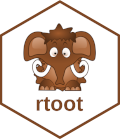

Changelog
Source:NEWS.md
rtoot 0.3.3.9000
- added progress bar for long running queries (#141) by @chainsawriot
- added 429 check (#144)
- fixed #146 by adding a confirmation step for
auth_setup(browser = FALSE)(#147) - fixed #149 by removing quotes around the inputted instance name though
auth_setup(instance = "")(#150) by @thisisnic
rtoot 0.3.2
CRAN release: 2023-06-29
- added
post_status()to favourite/bookmark/reblog statuses (#134) - fixed example in
get_status()(#134)